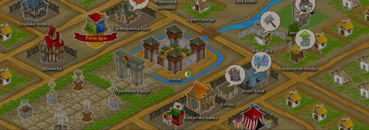
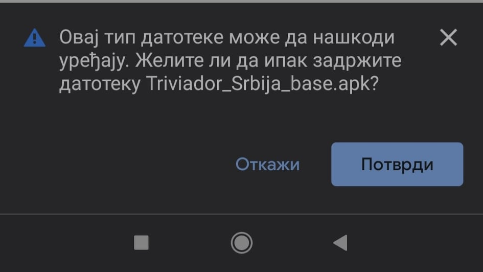
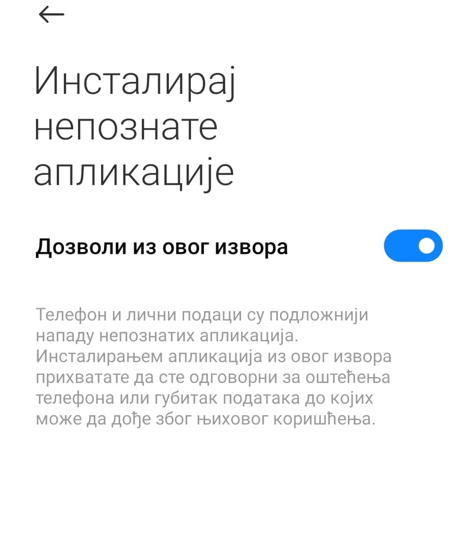

Trivijador stara verzija
Uputstvo
Kliknite na
download
dugme.
Idete
POTVRDI
kada se pojavi slika ispod. 
Omogucite instaliranje aplikacije iz nepoznatih izvora 
Instalirajte aplikaciju
Kliknite na dugme ispod
Download